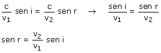
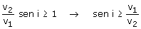

Aunque el enunciado se refiere a una onda en general consideramos el caso de una onda luminosa
La ley de Snell expresada en función de las velocidades en cada medio es:  Como sen r tiene que ser menor que 1, no habrá rayo refractado cuando se cumpla que:  En esta situación toda la luz incidente se reflejará porque no puede refractarse |